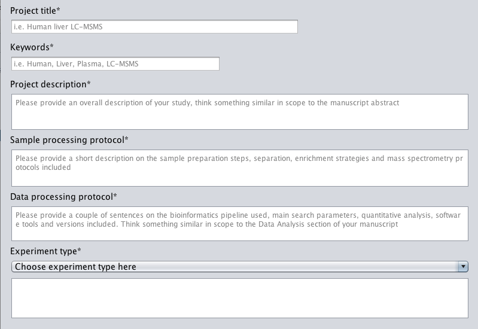

Dataset Details
The dataset details section requires six key pieces of information about your project:

| Previous | Next |
The Dataset Details step asks you to give some details about your project, as this will help other people to learn a bit more about your datasets. The information we are asking is minimal:
The dataset details section requires six key pieces of information about your project: